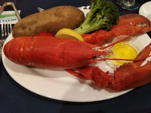

Conference trip in New York
Cold water shower challenge for 4 nightsI just came back from a trip to New York, where I attended a conference related to my field. It was my first time visiting the Big Apple since 2017, and I had a blast!
Cold doesn't bother New Yorker
The weather during my visit was a mix of sunshine and scattered clouds, creating a picturesque scene. However, I found it a little too chilly for my liking. In May, the average temperature usually hovers around 66°F, but at night, it can drop as low as 63°F. Despite the weather, my hotel room didn't have any heating, and to my surprise, there was no hot water available at night either. It seemed like an energy-saving measure in this bustling city. Coming from a routine of taking a shower before bed, this was quite a culture shock for me.
The experience became a unique challenge as I braved four days of cold showers. By the last night, I decided to skip the shower altogether, but I quickly regretted that decision as I found it difficult to sleep without my usual routine. As soon as daybreak arrived, I eagerly rushed to the shower, anticipating some warmth. Finally, on my last day of the visit, I was greeted with the luxury of hot water, which felt incredibly refreshing.
Lobster dinner with Pros
But I didn't let that ruin my mood. I enjoyed the conference a lot, learned some new information, got some inspiration for my project, and met some interesting people. I didn't had a chance to explore the city a bit, see some famous landmarks, but I was having a lobster dinner at conference. However, it was wild. I have to deshell it with my bear hand. Thanks Gordon Ramsay, I deshelled it and had nice meal.

I'm glad I went to New York. It was a great experience, both professionally and personally.